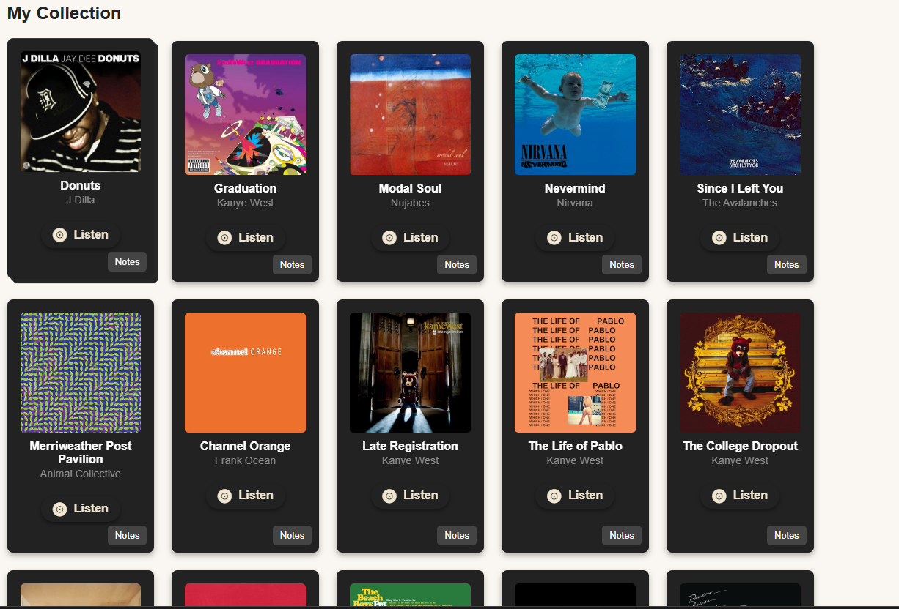

Projects Showcase
A collection of web development projects demonstrating my front-end and full-stack capabilities.


Looking for My IT Expertise?
My passion for web development is rooted in strong technical and problem-solving skills acquired through my IT career. Let's discuss how I can bring both to your organization.